---
layout: default
title: "Case Studies"
subtitle: "A collection of case studies written by Product Designer Kate Durr"
categories: Kate Durr, Case Studies, Case Study Posts, Landing Page
--- 

<!-- Start Body wrapper -->
<div class="wrapper-body body-padding">
  <div class="col-md-12">

     <!-- Start Blog Post -->
     <div class="margin-news">
         <div class="col-md-12">
           <h3 class="heading-inner">Case Studies</h3>
              <div class="hr"></div>
               <div class="holder wow fadeIn" data-wow-delay="0.1s">
                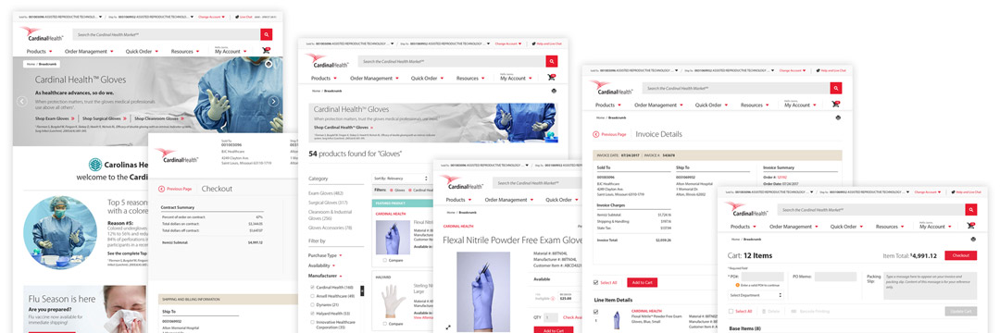
                <h5>Case Study: Cardinal Health Market℠ (Aug 2016 - Dec 2018)
                <span class="date">Written by Kate Durr - January 10, 2022</br>
                Estimated read time 38 mins - Skip to TL;DR</span></h5>
                <p>The Cardinal Health Market℠ project was a multi-million dollar, multi-faceted, large e-commerce platform redesign project. A relatively small group of 58 incredibly dedicated people led and worked on it. And over the 2+ years I worked on it, I designed and implemented the visuals for the completion and launch of the project. It was ultimately a highly involved process, and I am grateful for meeting the many talented professionals I got to work with. However, the project certainly had its pitfalls. This case study goes over my journey as a Lead Product Designer on this project: my methods, what I achieved, what I learned, struggles and how we overcame them as a team, the project's release, and why I left the project after 2 years and 8 months.</p>
                <h6>Making a team of designers obsolete</h6>
                <p>I was originally hired for a small graphic design role on the project. At the time I was contracted, my roles only involved categorizing products and product images, finding a suitable studio to photograph new imagery, preparing to update graphics, working across silos to help unify design concepts, drafting and getting approved a 14-page style guide for authoring product descriptions and categorizations, and working with the outsourced team of graphic designers to approve user interface designs.</p>
                <div class="blog-image wow fadeIn" data-wow-delay="0.1s">
                  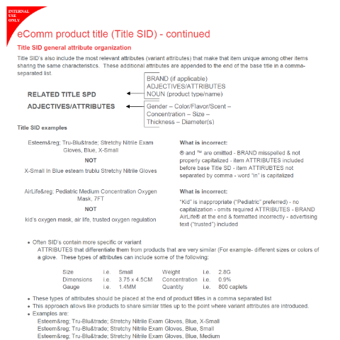
                  <p class="image-caption"><strong>Fig 1.</strong> A screenshot taken from the 14-page internal eComm Product Content Style Guide I helped author. This guide helped our team establish concrete guidelines for authoring product details from product title to features to basic imagery requirements across the entire site.</p>
                </div>
                <p>However, within 3 months I quickly learned those processes, completed tasks, or outgrew or incorporated them into my daily routine. I found more time throughout the day to categorize the wireframes the team of designers were making and propose the possibility of saving money and moving the outsourced work in-house. After some thought, I volunteered to take on the full responsibly of the work given to an entire team of around 14 people. Based on my natural drive and talent, I knew I could handle learning on-the-job. I also knew it would be a lot of work. The stakeholders agreed, and within a few weeks the contract was up with the outsourced team, and I took on all of their responsibilities. What I didn't realize was just how easily I'd devalued my work by taking on the role of an entire team so willingly.</p>
                <p>From what I've learned working in design, most people who aren't designers think the job is both easy and unnecessary. At Cardinal Health, I'd overheard executives describe design as "Useless. After all, you don't go to a gas station to pump gas because it's pretty. You pump gas because you need it." That misunderstanding is common. Though it may not be pretty or flashy, the average consumer might not consider that it's design that makes the roadside signs eye-catching, the pumps easy to read, the grades of gasoline easy to distinguish from one another at the pump, the handles easier to grip and squeeze, the transaction screens easy to navigate, and pump lanes just the right size for most vehicles. Design is everywhere, and it is very necessary. Good design is also not easy.</p>
                <div class="blog-image wow fadeIn" data-wow-delay="0.1s">
                  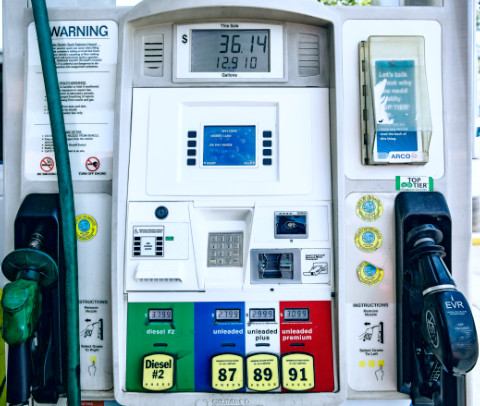
                  <p class="image-caption"><strong>Fig 2.</strong> No matter where you go to get gasoline in the US, you can very easily use the pump at every major gas station chain. This is because smart design has standardized these consoles for ease-of-use and readability. (Photo credit: <a href="https://www.pexels.com/@ekaterinabelinskaya" target="_blank" rel="noopener noreferrer nofollow">Ekaterina Belinskaya</a> from <a href="https://www.pexels.com/" target="_blank" rel="noopener noreferrer nofollow">Pexels</a>)</p>
                </div>
                <h6>Becoming the "source-of-truth"</h6>
                <p>After volunteering for my new position as Lead Product Designer, I got to work streamlining the design process. Now, the wireframes and mockups were entirely my own. The smaller selection of wireframes I'd inherited were originally designed using a combination of Confluence and Photoshop. They were then refined by the outsourced design team in Photoshop and exported to an online previewer tool called InVision. It was a fairly solid process, and generally easy to understand and share. This early design phase worked for what it was, and coming on at the tail end of this initial process, I had few complaints.</p>
                <p>However, for what we now needed, it could be streamlined further. Now that my team had an in-office designer, the basic wireframe process could be completed entirely in Photoshop to be shared directly at any time. Any changes that needed to be made based on feedback could be implemented immediately by me, and sometimes right there during my meetings with shareholders, managers, and developers. Basic wireframes made in Photoshop could be turned into usable mockups quickly, using the same file as a base. Efficiency was very important, because the team worked in a fast-paced Agile system. We organized notes and changes in Jira and got together several times a week - often several times a day - to coordinate change logs and reprioritize tasks.</p>
                <p>After a while, the team outgrew the limitations of InVision, and I recommended a  brand new app called Zeplin. Mockups made in Photoshop could be directly exported to Zeplin with all the layer data intact. This app eliminated a lot of the back-and-forth communication I needed to have with the expansive in-office and off-shore development teams to make sure each breakpoint and use-state of each page was formatted exactly how we needed it. Anyone could now hover over each element in the program and know exact pixel dimensions, distance between it and other elements on the page, hex codes, and more. Everyone on the team could also view the mockups and make comments on what changes needed to be made.</p>
                <div class="blog-image-wide wow fadeIn" data-wow-delay="0.1s">
                  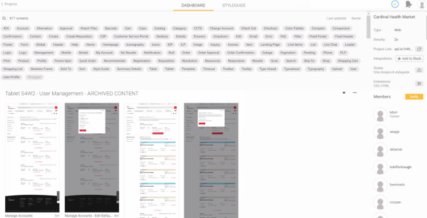
                  <p class="image-caption"><strong>Fig 3.</strong> For us, Zeplin was a powerful collaborative tool that displayed inline HTML and CSS based on layer data exported from Photoshop. It made communication with development teams much simpler.</p>
                </div>
                <p>Zeplin acted as an active and direct style guide for most of the mockups for the site. But even so, I also created and kept up-to-date a full style guide for the project that included descriptions for animation, breakpoint, and user interaction behaviors. There were certain elements this document was critical in explaining. For example, we had a lot of trouble explaining the responsive functionality of the image containers for products and banners throughout the site to the development team. As a result, the style guide had an entire section dedicated to the resizing functionality for all of the various types of image containers on the site.</p>
                <p>In addition to this work, I gathered, created, and kept up-to-date promotional imagery for the site. I established design guidelines for this content and kept careful record of the safe zones and editing criteria for visual assets since imagery was so important on the platform. I also animated transitions and loading icons in what was then Adobe Flash, now Animate. And I designed every icon on the site in Adobe Illustrator for accessibility and scalability.</p>
                <div class="blog-image wow fadeIn" data-wow-delay="0.1s">
                  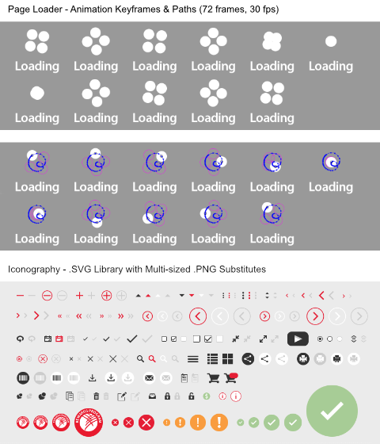
                  <p class="image-caption"><strong>Fig 4.</strong> The perpetually spinning loading icon was animated in Adobe Flash (now Animate) in 72 frames at 30 frames per second. The website icon set contains 155 unique .SVG icons, or 465 total icons if you also count the backup .PNG icons created at 2 different sizes.</p>
                </div>
                <p>I also worked with both in-office and off-shore development teams in Adobe Dreamweaver to code certain elements and custom functionality on the site where it mainly required HTML and CSS to work appropriately. At the time, my knowledge of code was very limited, but I was nonetheless able to do the appropriate research and testing to ensure my code worked as intended for delivery. This collaboration helped build a base for understanding what in my designs were practical and easy to implement by our development team, and was critical in helping isolate complexities and reducing needless work. I began creating mockups with both the user and the development teams in mind, to make work more efficient.</p>
                <p>Because the pages were being designed to manage through Adobe AEM (Adobe's CMS), the mockups themselves were grossly complex. Each mockup contained anywhere from around 100 to 1,500 uniquely named and meticulously organized layers describing their function. This level of organization allowed the exported mockups to be directly used to code the site's frontend. So, each layer needed to be pixel-perfectly placed within a 16-column grid and named properly according to front-end coding requirements. In my working folder, I categorized 48 major mockups between desktop/tablet and mobile versions, each with anywhere between 2 to 47 use states. This did not include template mockups, which were templates for content like landing pages, promotions, press releases, and blog posts.</p>
                <div class="blog-image wow fadeIn" data-wow-delay="0.1s">
                  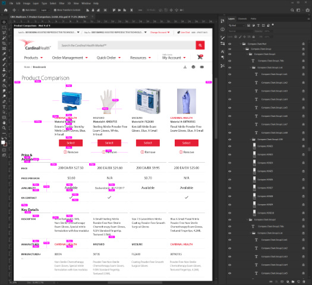
                  <p class="image-caption"><strong>Fig 5.</strong> This screenshot of one state of the Product Comparison page shows just a small portion of the total 1,435 layers nested within 351 unique groups for this page in Photoshop. Distances which remain consistent between key elements on the page are annotated in bright pink.</p>
                </div>
                <p>Some of the simpler mockups weighed in at only around 3,000 kilobytes, while others completely bricked my work computer when they were opened and adjusted for more than 10 minutes. And if they didn't crash, I instead ran into issues saving in Photoshop after some mockups started to exceed the program's memory restrictions. In this way, Photoshop was a major limitation, but it worked best with Zeplin, which streamlined the coding process to an extent that the benefits far outweighed the program's shortcomings.</p>
                <p>To be fair, my work laptop was also not built for design work. It was a great all-rounder device all things considered, but severely lacking in RAM and completely without an appropriate graphics card. On a few occasions, when I asked for an upgrade, I was turned down due to budget constraints. After a while however, I was given 2 1080p external monitors, which was very helpful in juggling work on multiple mockups across multiple platforms.</p>
                <p>Even though I was only 23 at the time, after only a few months I had become the source-of-truth for everything relating to design for this project. I had my fingers in every pot, so to speak. I was designing, coding, leading review meetings with anywhere from 2 to 20 people, and providing my expertise on the most minute of details on the project and its scope. And the refreshing thing was, my teammates were nothing but respectful toward me and my professional position. They deferred to my knowledge, and didn't question my recommendations or authority on design matters. Meetings didn't feel like debates, they felt like collaborations. It was a very fortunate position to be in, and I am grateful for that. In turn, I also fully respected my team and every one of their abilities in the tasks they were given. It was an intense project, and we all seemed to be on the same side.</p>
                <p>However, as the project progressed, the team and I ran into resource issues more and more often. Budget was a huge concern for us, because the Cardinal Health Market℠ had been consistently deprioritized. We had been told that many executives believed the original platform, which hadn't been updated since 1999, worked perfectly well. The result was a constant battle for resources, time, and manpower.</p>
                <h6>Setting up a photography studio</h6>
                <p>Budget limitations made key decisions tricky from the start. Our team had difficulties hiring for key aspects of the project, especially in regards to design. There was a lot of employee turnover, and proper compensation and equipment were just out of reach. Money was so much a driving factor for every decision that very often we had to forego the best choice for the cheapest one. This impacted all of us in scope, effort, and time and became roadblocks for the entire project. One clear example of this was deciding our solution for product photography.</p>
                <p>As part of my original and ongoing roles, I worked to find a solution for photographing all of the products we would sell through the Cardinal Health Market℠ platform. This included a catalog of over 100,000 medical products, most of which had never been photographed, and if they had, a large portion of the photos hadn't been updated since the 90's when the original product site launched. The logistics of organizing and compiling missing data was a feat on its own, and fortunately my teammates were working very diligently on that. My job then was to make sure their work could shine through updated photography, so I scouted out some local studios that would help.</p>
                <p>My initial pick was a large studio in the area that offered to help coordinate every aspect of the photoshoots for us. This would effectively place the communication with product representatives and collection, processing, and eventual disposal of products entirely in the hands of the studio and eliminate a lot of that work for our team. In addition, as part of their quote, they included editing and delivery of completed photography assets that could be implemented directly to our site. However, their quote was too pricey for our budget, and so I found a smaller studio that offered something similar for a far less expensive price tag. The caveat was that the studio didn't currently have a photographer to process the number of products we were looking to update, they didn't have the resources to contact our product representatives, and they didn't have a system in place to process all of the products the way we needed them to.</p>
                <p>In the end, Cardinal Health decided to go with the cheaper option. So to solve these issues with the chosen studio, I suggested a very talented product photographer who I'd known for several years and who recently moved up to Columbus looking for work. I knew his work well and from the time I'd spent with him, I knew he could easily handle the position and its responsibilities. The studio quickly hired him at my suggestion. While the studio prepared their space, the photographer, <a href="https://www.cameroncoyan.com/" target="_blank" rel="noopener noreferrer nofollow">Cameron Coyan</a>, worked with us to create a system of cataloging and photographing the products when they came in. For what we had, the end result was a good system. We drafted a 19-page product photography guide and product tags to help with the process. And once they got approved and the products came in, we got to work.</p>
                <div class="blog-image wow fadeIn" data-wow-delay="0.1s">
                  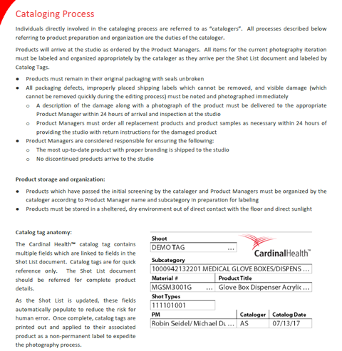
                  <p class="image-caption"><strong>Fig 6.</strong> A screenshot taken from the 19-page internal Photography Style Guide I authored, including a demo of the catalog tag we created. This guide formed concrete guidelines for cataloging, photographing, and editing imagery for the site.</p>
                </div>
                <p>For the few months it was set up this way, the process ran smoothly. On top of my normal duties, I spent part of my week driving to the photography studio with a coworker and helped Cameron with shots by providing direction where needed. The studio was highly professional, and it was a positive experience working with them. However, during our second major lull in product deliveries to the studio, I felt the process could be more efficient, and with some back-and-forth, we were given permission to research photography equipment and procedures for the project to be moved in-house.</p>
                <p>At the same time, the studio we had been working with was planning to head in a different direction with their business, so they were supportive of our decision. Cameron was hoping to continue work in product photography, so I suggested him to my direct manager and he started the process of onboarding Cameron as a contract photographer. While we waited for this to go through, Cameron and I compiled a list of the necessary equipment we would need for the new, in-house studio. It was a very modest list, containing all of the most budget-friendly options we could find, and didn't even require a camera or production computer, since Cameron offered to use his own. This easily saved Cardinal Health around $10,000 in equipment alone. In total, it cost the project less than $1,000, and then I was put in charge of ordering and collecting the materials for the new studio.</p>
                <p>In the meantime, our teammate set out to reserve a permanent room for us to set up in. We set up in the only room available - a small, closet-sized space that, despite nearly always being occupied by our photographer, our equipment, and boxes of products to shoot, we kept having to fight over with others desperately looking for an open conference room whenever Cameron left for more than 10 minutes at a time. It was a very cramped space, but it was what we had, so we made it work.</p>
                <p>With Cameron onboarded as our project's permanent, in-house photographer, we continued coordinating with our sales team to receive more products to shoot and moved along with the project. With Cameron onboard, I was able to focus more on my web design responsibilities which were becoming increasingly demanding.</p>
                <h6>Working through lunch</h6>
                <p>The timelines and requirements for the development of each webpage required me to constantly update existing mockups while simultaneously creating and refining new sets. At the same time, I kept the style guide and our finalized mockups on Zeplin up-to-date as these were constantly being referenced throughout the production pipeline. At any given time, I would need to be working on anywhere from 6 to 12 mockups at once. Not only did I need to ensure I was meeting deadlines, I needed to be available to answer questions quickly to prevent any stalls in the project. I stopped taking breaks and then stopped taking lunch breaks most days, and worked through lunch in front of my computer. When my coworkers invited me to lunch in the cafeteria or out to a restaurant, I brought my work laptop with me to keep pace with the demands. Eventually, our manager banned bringing work computers out to lunch, so I had to stop accepting most lunch invitations after that.</p>
                <div class="blog-image-wide wow fadeIn" data-wow-delay="0.1s">
                  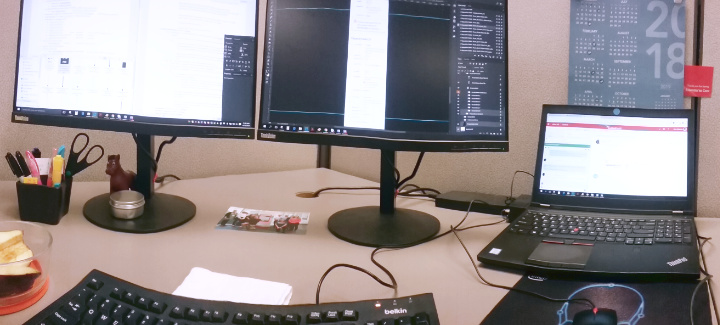
                  <p class="image-caption"><strong>Fig 7.</strong> In order to juggle the number of mockups I needed to work on at any given time, I always used 3 monitors to display my notes, team chats, and mockups. This was my view for most of my time on the project.</p>
                </div>
                <p>Up to that point, I'd often attend between 3 and 6 meetings a day. Most of their content was relevant to the designs I was working on, and I'd use what I learned to add to my growing notes and task list. However, the meetings started interfering with my deadlines, so my manager worked with me to reduce the number of meetings I needed to attend. The unavoidable problem with this solution was that I now mostly received design updates second-hand which increased margin for error. A couple of times, this resulted in me creating something completely off-track, but most often it led to me reworking the flow to something more efficient than originally planned. Whatever the result, our team worked together to ensure any changes best fit within the scope of the assignment we were currently focused on.</p>
                <p>Despite my best efforts and frequent overtime, my work began to pile up, so I appealed multiple times for a new hire to help me with design work. Previously, I had tried to work with some of our front-end developers, a coworker on a separate design team, and our photographer Cameron to reduce some of the workload, but they all simply didn't have time to learn the process. They were all understandably preoccupied with their own tasks. I needed someone new who could fully dedicate their time to learning the processes, but when I put forth a formal request, I was denied. I was told more hires would temporarily slow down the design process while I properly trained them. It was not something we could afford to do with the deadlines we were given.</p>
                <p>Instead, the team hired an assistant to help Cameron with photography. Cameron had become bottlenecked as well, mostly from product representatives who did not reply to our requests for products to update imagery for the site. Most often, when Cameron received a reply, he was given the same imagery that already existed of those products and was then tasked with enhancing them for the new platform. But because these images were out-of-date, they were small and significantly artifacted. That meant spending a large majority of time editing imagery and reconstructing photos in Photoshop. This was much slower than photographing the actual products, so Cameron had been falling behind. To prevent this, the assistant photographer was hired to help him with edits.</p>
                <div class="blog-image-wide wow fadeIn" data-wow-delay="0.1s">
                  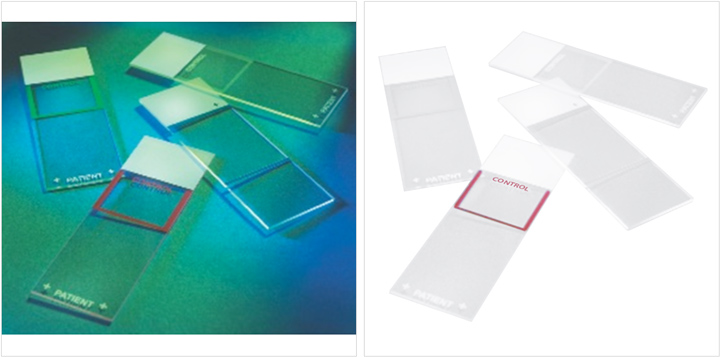
                  <p class="image-caption"><strong>Fig 8.</strong> Many of the product photos we received looked like the example on the left (actual resolution shown). The example on the right is the same photo after going through our editing process. Editing a single photo in this condition took anywhere from 5 to 30 minutes, while photographing, editing, and uploading an entire set of 5 new images for the same product could take about the same amount of time.</p>
                </div>
                <p>Although their specialty was photography, my manager hoped this new hire could also help me with mockup updates in their freetime. However, the skills the new photography assistant used were much different from the ones I needed. Despite their best efforts, they couldn't help and were much more proficient to help Cameron, since that was what they were traditionally trained to do. So I continued most of my work alone; occasionally asking for assistance from the 2 photographers with graphics and designs that more closely involved their skillsets when that came up.</p>
                <h6>Budget cuts, key changes, & roadblocks</h6>
                <p>Following these complications, the team was nearing a critical point in development. The project was less than a year from launch and we had to decide which features we would need to forego to ensure a smooth, working experience for customers on release. Meetings went on longer. Crucial ones involved the whole team of 58 people, both in-office and off-shore, and started as early as 5:00AM, going for 4 to 6 hours. This isn't unheard of for a large web project close to crunch time, so I wasn't concerned. However, these meetings did ultimately cut into my productivity. And to make up for lost time, I spent longer days in the office.</p>
                <p>Around this time, I made my final few appeals for additional help with design. However, I was told we simply could not afford the additional staff. In fact, at this point in the project, we were losing multiple key members on our team to layoffs, corporate restructuring, and project reallocation. These changes necessitated us to reprioritize features further, and several meetings saw the minimization and restructuring of key functionality on the site. Some of these changes were very much for the better, allowing us to rethink functionalities for simplicity and usability. Other changes would impact when we would be able to onboard certain customers to the site, because they resulted in delaying key features for those customers. As a result, we pivoted from a traditional full-featured launch to a multi-staged soft launch. This would give us more time for design and testing by reorganizing the release of important features, which would increase quality in the long run.</p>
                <p>Somewhere in the middle of these key changes, the photography assistant moved on to another project outside of Cardinal Health and left. Afterward, the photographer and I were notified that we would soon be receiving a rather large and important 360-degree photography booth for a feature stakeholders now wanted to incorporate into the site.</p>
                <p>Cameron quickly learned to operate the machine and began photographing what relevant products we had in the studio. At the same time, I introduced the concept of 3D photography to the development team who promptly told us the site and photo previewing system we had in place was not capable of handling the 360-degree photography files. It would require time and manpower to incorporate this feature into the designs that we currently did not have. Since we had already needed to cut several key workflows by this point, and this feature clearly seemed much less of a functional priority than many of those, we drafted stories for sprints much later down the pipeline and temporarily shelved the 360-degree photography concept. Since the products we'd already received wouldn't be sent to us more than once, we asked Cameron to continue to create 360-degree photography for relevant products as they came in, but with the intention that the files were not going to be used for a long time.</p>
                <div class="blog-image wow fadeIn" data-wow-delay="0.1s">
                  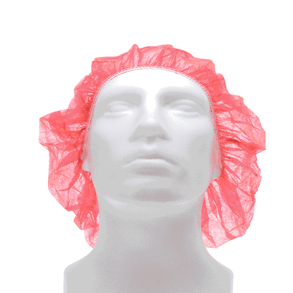
                  <p class="image-caption"><strong>Fig 9.</strong> A .GIF demo for one of the products featuring 360-degree photography. Images on the site would not be uploaded as a .GIF, but instead could be rotated manually by the user through the interface.</p>
                </div>
                <p>Meanwhile, our teammates who had been cataloging and organizing product data for the Cardinal Health Market℠ were searching for an Excel expert to help them with the final push of data categorization for the over 100,000 products they had been working on. They spent a few weeks interviewing potential candidates for the position. One day, a man was brought in for his first day on the job - a highly qualified individual who had many years' experience in the program. During his introduction on his first day, I overheard him calmly tell my coworkers that what they were asking for was impossible with the time and resources given. I heard him thank us for the opportunity, then watched him get up from his seat and walk calmly toward the elevators. I never saw him again.</p>
                <p>We continued to have more issues looking for help after that. In the end, upper management decided it would be more practical to continue to work on the product list the way we had been. After all, the time we had left wasn't enough for onboarding and completion of the job at the same time. Fortunately, my teammates were highly competent in their work and were able to complete everything they needed to complete. The detriment then was that they couldn't reallocate their time for other important tasks. Some had to be delayed or dropped entirely to make up for it.</p>
                <p>Other issues cropped up during the course of the project that didn't hinder our progress but weren't insignificant, so I'll briefly mention them. At one point, for a few months' time, we would be notified at least every other week to clear our office and work from home for several days while the building was being scoured and treated for bed bugs. After this, the second-story conference room we had appropriated for our studio flooded from the kitchen on the story above. We had to move and inspect every piece of electrical equipment and medical product we had to make sure nothing was ruined. After a week of putting the photography project on hold while the room dried, we moved everything back and crossed our fingers it wouldn't happen again.</p>
                <p>The building we worked in wasn't ideal, and fortunately upper management knew this. Teams were slowly being moved to a brand new campus further south. Unfortunately, we were some of the last few workers moved. When we did move, the new building was very nice; with standing desks and large, untinted windows to let in plenty of daylight.</p>
                <p>By the time we had been scheduled to move to the new building, we got word from the board of directors that the photography portion of the project was being dropped. My coworkers and I petitioned to keep the project ongoing, since it could be used to save the business hundreds of thousands of dollars it would otherwise have to spend on hiring out separate contracted photo studios for photographing products and related promotional materials in the future. We proposed a plan to set up clear communication channels across silos for the in-house photography studio to communicate with the design department and sales representatives to photograph products for projects as-needed. Since Cardinal Health was such a large company, the studio would never be short on work. However, the decision was ultimately made to eliminate the position.</p>
                <p>Before it was fully terminated; however, Cameron was sent to a conference in Las Vegas to photograph large equipment pieces that would be at the conference and would otherwise be difficult to get a hold of. My coworkers and I recommended we plan in advance and schedule meeting times with sales representatives to get their equipment photographed and send an assistant from our team who knew the products and representatives well to help coordinate more efficiently, but our suggestions were dismissed. Cameron was sent to Las Vegas with no plan in place, and the rest of his time was functionally quite wasteful. After that trip, he officially left the project. Our photography studio was eventually placed in a storage closet at the new office building when we moved there.</p>
                <p>Described together, these issues might make the project seem very much like a chaotic mess barely held together with duct tape and sticky tack. However, as anyone who's worked on a large project for a large company knows, these kinds of issues are very quite commonly par for the course. As an employee, you should expect to come across push-back for a lot of ideas that you see as critically important, given your close perspective. However, to a stakeholder or director, that issue might seem more like a minor blemish on a much larger lens. Many of our proposals that were overturned were undeniably quite crucial, but in the end we made due. And we did so because of our teamwork, resourcefulness, and professionalism. Without the efforts and coordination of my team, I can certainly say this project wouldn't have been able to get off the ground. And that is what makes phenomenal employees invaluable.</p>
                <div class="blog-image wow fadeIn" data-wow-delay="0.1s">
                  
                  <p class="image-caption"><strong>Fig 10.</strong> The last time our photography studio was used was in a pop-up setting during a conference in Las Vegas. Unfortunately, very few products were available to shoot due to a lack of proper communication and planning.</p>
                </div>
                <h6>Project wrap-up & departure</h6>
                <p>Despite all this chaos, the Cardinal Health Market℠ smoothly released to our first wave of customers in March 2018. Though we threw a team celebration for our accomplishments, there was immediately still so much work to do to implement many of the features we had to initially forego for the soft launch. My work never slowed down and I continued to keep rapid pace with new requirements, communicating back-and-forth with management, development, and quality assurance, and ensuring old features continued to be updated and improved as we received feedback. My whiteboard was covered in sticky notes outlining the website and the interactions between webpages and individual page functionalities. My notes documents were growing ever larger and more complex. And, as always, I remained the reliable source-of-truth for all designs and user interface workflows for the site.</p>
                <div class="blog-image wow fadeIn" data-wow-delay="0.1s">
                  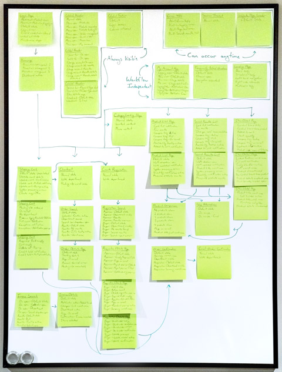
                  <p class="image-caption"><strong>Fig 11.</strong> The sitemap for the website at the time was massive and ever-expanding. My notes pages and project board helped me keep up with page requirements and relationships.</p>
                </div>
                <p>After the initial launch, we added more features and with them more high-profile clients to the platform. Over all, the website transition was going well, and we were receiving a lot of positive feedback from customers. More soft-launch dates were set and met. The team stayed small and, in general, didn't shrink any more than it had just before launch. Our work was being recognized by stakeholders and across teams as an ideal example for project structure and user experience updates in the future. On all accounts, things were going very well.</p>
                <p>However, at this time, my health began to rapidly deteriorate. I was seeing 6 separate medical specialists regularly for chronic and increasingly more complex health issues. None of these doctors could pinpoint a physical reason for my symptoms and suggested the issues could be stress-related. My work never slowed, and with the team as small as it now was, we were receiving even less support for our efforts. I was getting panic attacks and migraines multiple times a week. I was more prone to severe aches, pains, and nausea and couldn't sleep most nights. My mental health was deteriorating and I had little energy for activities or hobbies after spending most of it on work.</p>
                <p>I talked to my mentors, doctors, and counselors asking what to do in my situation, and they all agreed - "You need to change your job." But, why? My work now was just as important to my team and to the project as it had always been. I told my manager that my health was poor and that my doctors all agreed it was either entirely due to or aggravated by stress. For the first time, I was starting to lose grip on my deadlines because most days I felt too sick to concentrate.</p>
                <p>And so, I had to make the incredibly tough decision to leave my position at Cardinal Health. My manager was shocked, though I had been asking for help, support, and better equipment for years. And because I had been taking on the responsibilities of 14 people for so long, my health was no longer what it used to be. In the end, he agreed to my request to leave, and I prepared all of my notes for the onboarding of a new Lead Product Designer. Every single open task in my list was completed or set aside at a clean stopping point for development and I neatly packaged everything for delivery before I said goodbye to the team I had worked so passionately alongside for so long.</p>
                <p>In hindsight, I wish I hadn't needed to leave. My team at Cardinal Health was amazing, and I enjoyed the work. It was simply too much for one person to handle alone. And the project wasn't projected to receive an increased budget for more help. For my health, I had to go, and I do feel better for it - albeit a bit sad.</p>
                <h6>Postscript</h6>
                <p>I took 3 months off from work after that, and at the start of the new year, I began a new job as a Lead Product Designer at a luxury dental office in Powell. My health was still somewhat poor, but I was able to work again. And my work was just as exceptional as it had always been.</p>
                <p>A few months into my new job, my old Cardinal Health coworkers told me my previous position had yet to be filled. They were looking for a suitable replacement, but 1 had already quit and the current designer had been hired simply because she was the cheapest option. I didn't hear any further developments about the position after that.</p>
                <p>At the time of this writing, I recently saw a posting on a job search site that called for a Lead Product Designer on a new project at Cardinal Health that would help the pharmaceutical sector of the business revamp their outdated website. I remember that site - it was even more outdated than the medical website we had worked to update for our project.</p>
                <p>Interestingly, they had based their job description and task list entirely on what I had accomplished in my old position in the medical sector for the Cardinal Health Market℠ project. It featured a detailed list of expected milestones that mimicked verbatim the milestones I had independently volunteered for, sought out, and achieved while in my old position. And even though the position's responsibilities clearly should have been distributed to more than one person, they were still expecting it to be filled by one. Apparently, I had left enough of an impression at Cardinal Health to set the standard for that job and all jobs like it at that company now and in the future.</p>
                <div class="blog-image wow fadeIn" data-wow-delay="0.1s">
                  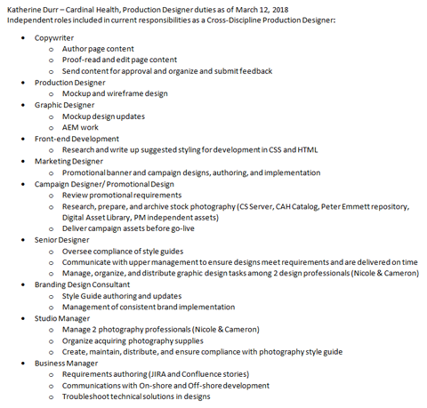
                  <p class="image-caption"><strong>Fig 12.</strong> I kept notes detailing my various roles. Some of these were complex enough to warrant being a separate job, but I performed them all as part of my daily responsibilities.</p>
                </div>
                <p>If I wanted the role, it seemed all I needed to do was speak up. After all, I had done it before. But I decided against it. Based on the task list and my past experience, it was clear by the posting they expected a single person to complete every task once more. From firsthand experience, I knew this would lead to extreme burnout. Additionally, the position described no intention of working closely with the Cardinal Health Market℠ team. This meant creating a new user experience and user interface design from scratch which would introduce usability discrepancies in both platforms and increase design and development costs. It was an unwise decision in regards to resource spend.</p>
                <p>It was only then that I realized the extent of my accomplishments in that position. I've since found out that I have chronic health conditions that require special treatment and care. And the high levels of stress over such a long period of time did indeed compound the symptoms and make them worse faster than they would have otherwise. I've had surgery to manage it, and found out I'll need more in the future. And despite my medical condition, I boldly led the project in design and powered through, creating extraordinary deliverables on my own. I accomplished so much that would normally take a whole team of designers to coordinate and work toward. It is certainly a remarkable accomplishment.</p>
                <p>However, instead of bolstering my value, the lesson directors seemed to learn from my volunteering to take on more work was that Graphic Design was worth less. This obviously caused several issues for me when I requested assistance and better resources. While I was working on the Cardinal Health Market℠ project, I juggled 2 additional jobs to pay my bills while being told it wasn't in the budget to compensate me more. And considering how critical the role was and still is, this is highly unfortunate.</p>
                <p>In all, I learned an incredible amount at that job, and met some amazingly talented and dedicated people. During the course of the project, we intermittently dealt with both commonly mundane and highly complex roadblocks and were able to overcome them all through clear communication, dedication, and teamwork. Everyone on the team showed respect for their fellows and it was all highly deserved. It was a rare opportunity to work with such high levels of concentrated competence, and that was certainly the most enjoyable part of my job.</p>
                <h6>Project Breakdown</h6>
                <p>In the end, while leading the project in design for the Cardinal Health Market℠ project, I created (among other things not listed):</p>
                <ul>
                  <li>A 635 page document containing highly specific, detailed notes about the pages on the site, development processes, and requirements for future page releases</li>
                  <li>3 full-length style guides
                    <ul>
                      <li>15-page Product Descriptions style guide</li>
                      <li>19-page Product Photography style guide</li>
                      <li>13-page non-standard size Web Design Requirements & Functionality style guide</li>
                    </ul>
                  </li>
                  <li>5 process guidelines, instruction, and requirements documents
                    <ul>
                      <li>OneDrive application access and use instructions</li>
                      <li>Product taxonomy guidelines</li>
                      <li>Photoshop and site mockup access and use instructions</li>
                      <li>Zeplin platform access and use instructions</li>
                      <li>Template page design and implementation requirements instructions</li>
                    </ul>
                  </li>
                  <li>16 variant image placeholders for products without imagery</li>
                  <li>155 .SVG icons, and additionally at 2 optimized resolutions each for .PNG sprite use</li>
                  <li>48 major mockups (unarchived) with 515 use state variants totaling 693,466 kilobytes of entirely custom-created, pixel-perfect graphics each layer-labeled and organized to be friendly for code implementation</li>
                </ul> 
                <br/>
                <p>In addition to these deliverables, I received 2 awards for my efforts within the company:</p>
                <ul>
                  <li>Cardinal Health, Inc. Essential to Care award - An award given to a select few employees for consistently going above and beyond their duties in order to achieve outstanding accomplishments for their team or project.</li>
                  <li>Cardinal Health Market℠ team award - An award given to every member of the Cardinal Health Market℠ team who was instrumental in the development and launch of the multi-million dollar B2B website redesign project. Basically a participation award, which I am not a fan of on principle. But it was only given to members of our team, and the site's release was certainly worth celebrating.</li>
                </ul>
                <h6>Addendum</h6>
                <p>As a designer, I occasionally check on the health and status of my previous assignments to see how the project is currently doing - whether they've updated their design, need further design assistance, or have decided to go in a completely different direction. The Cardinal Health Market℠ is largely hidden behind a login screen, but because I have such intimate knowledge of the site's design, I can deduce the health of the site by that screen alone.</p>
                <p>I've checked recently, and unfortunately many of the details I designed have broken, been dropped or ignored entirely, or were never optimized based on the directions I left behind. The mobile version occasionally stops working entirely, and the 404 page that displays in its place shows only default browser code instead of the custom screen we implemented. It breaks my heart to see such a large project undertaken by so many talented individuals to be in such disrepair. But, it is no longer my project, and I have to have faith that there are plans for its improvement in the future.</p>
                <div class="blog-image-wide wow fadeIn" data-wow-delay="0.1s">
                  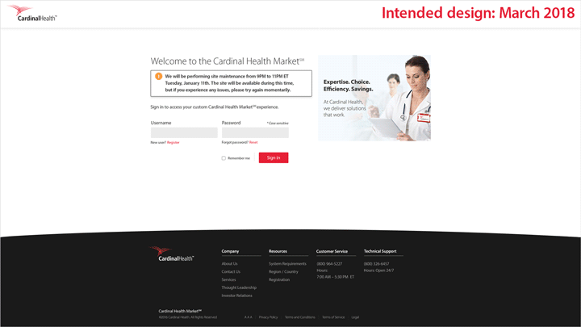
                  <p class="image-caption"><strong>Fig 13.</strong> The login page as it was designed and launched in 2018, showing proper notification banners and design elements, versus the login page as it is in January 2022.</p>
                </div>
                </div><!-- end blog post -->

      <!--Author Bio -->
      <div class="holder wow fadeIn" data-wow-delay="0.1s">
        <div class="row">
          <div class="author-bio-line"></div>
          <br>
          <div class="col-md-4">
            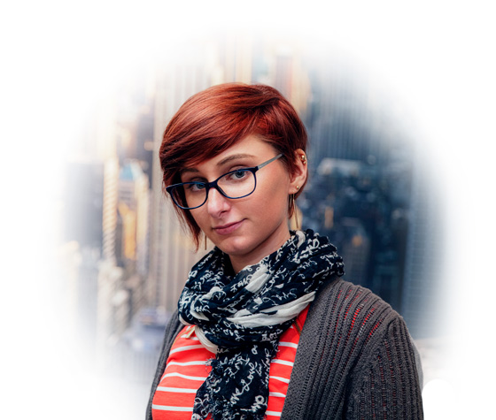
          </div>
          <div class="col-md-8 author-bio-center">
            <p>I am an ambitious, forward-thinking Product Designer with extensive experience creating brands and online presences. I am passionate about design and pride myself in my diverse skillset and being lightning-quick to learn anything. I have a fervent attention to detail and thrive in relaxed, human-first environments that emphasize collaboration to get things done. If you are interested in learning more about my professional credentials, <a href="contact.html">contact me</a> or <a href="resume.html">view my resume</a>.</p>
          </div>
        </div><!-- row -->        
      </div><!-- end author bio -->
               
         </div><!-- End news -->
     </div><!-- End margin -->
              
  </div><!-- End col-md-12 -->

</div><!-- End Body wrapper -->